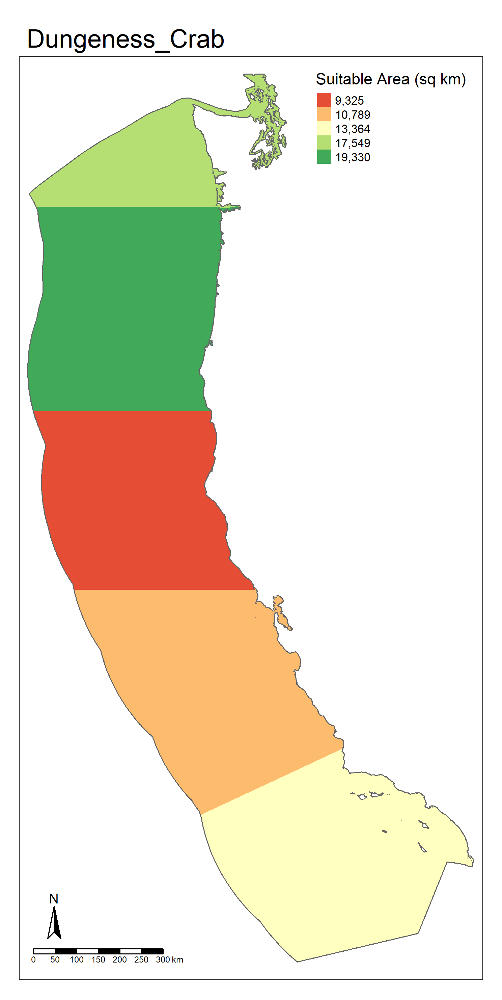

Here, I have been tasked with identifying the most suitable Exclusive Economic Zones (EEZ) for aquactulture development of oysters and Dungeness crab (Metacarcinus magister) through construction of an auotmated function. This analysis is based on the variables of sea depth and sea surface temperature.
The code chunk below details the R packages used, data loading, and data processing.
Code
## Librarieslibrary(tmap)library(terra)library(sf)library(tidyverse)library(here)library(viridis)library(stars)## Load Data# sea surface tempfilelist <-list.files(here("data", "sst"), full.names =TRUE)sst_raw <-rast(filelist)## check / transform sst crsif(st_crs(sst_raw) ==st_crs("EPSG: 4326")){print("SST CRS is already WGS84")} else{warning("Updated SST CRS to WGS 84") sst_raw <-project(sst_raw, "EPSG: 4326")}# bathymetrydepth_raw <-rast(here("data", "depth.tif"))## check / transform depth CRSif(st_crs(depth_raw) ==st_crs("EPSG: 4326")){print("Depth CRS is already WGS84")} else{warning("Updated SST CRS to WGS 84") depth_raw <-project(depth_raw, "EPSG: 4326")}# exclusive economic zoneseez_vector <-read_sf(here("data", "wc_regions_clean.shp"))## check / transform EEZ CRS if(st_crs(eez_vector) ==st_crs("EPSG: 4326")){print("EEZ CRS is already WGS84")} else{warning("Updated EEZ CRS to WGS84") eez_vector <-st_transform(eez_vector, st_crs("EPSG: 4326"))}## Process Data# rasterize the exclusive economic zoneseez_raster <-rasterize(eez_vector, sst_raw, field="rgn")# combine annual sst into overall averagesst_k <-mean(sst_raw)# convert sst from kelvin to celsiussst_c <- sst_k -273.15# mask sst to eez shapesst_masked <-mask(sst_c, eez_vector)# rename sst and remove intermediate objectssst <- sst_maskedrm(list ="sst_k", "sst_c", "sst_masked")# resample depth to sst resolutiondepth_resampled <-resample(depth_raw, sst, method ="near")# crop depth to sst extentdepth_cropped <-crop(depth_resampled, sst)# mask depth to eez shapedepth_masked <-mask(depth_cropped, eez_raster)# rename depth and remove intermediate objectsdepth <- depth_maskedrm(list="depth_raw", "depth_resampled", "depth_cropped", "depth_masked")
Part 1: Find Areas Suitable for Aquaculture of Oysters
Oysters are adapted to a depth range of 0 - 70 meters and a temperature range of 11 - 30 degrees Celsius.
The code chunk below details the steps of my analysis.
Code
## Calculate Suitabilityrcl_oyster_sst <-matrix(c(-Inf, 11, NA,11, 30, 1,30, Inf, NA),ncol=3, byrow=TRUE)rcl_oyster_depth <-matrix(c(-Inf, -70, NA,-70, 0, 1,0, Inf, NA),ncol=3, byrow=TRUE)oyster_suitability_sst <-classify(sst, rcl = rcl_oyster_sst)oyster_suitability_depth <-classify(depth, rcl = rcl_oyster_depth)oyster_suitability_stack <-c(oyster_suitability_sst, oyster_suitability_depth)# make a multiply functionmultiply <-function(x,y){return(x*y)}# use the multiply function to get only cells that are 1 for both variabelesoyster_suitability <-lapp(oyster_suitability_stack[[c(1,2)]], fun = multiply)## Calculate & Map Relative Suitability by EEZ#crop eez_raw to suitability rastereez_mask <-crop(eez_raster, oyster_suitability, mask =TRUE)# find area of raster cells cell_area <-cellSize(eez_raster, unit ="km")#calculate the total suitable area of km2 by regionsuitability_area <-zonal(cell_area, eez_mask, fun ="sum", na.rm =TRUE)# joining suitability areaeez_suitability_vector <-left_join(eez_vector, suitability_area, by ="rgn") %>%mutate(suitable_area_km2 = area,.before =geometry)## Map Exclusive Economic Zones by Suitable Areamap_oysters <-tm_shape(eez_vector)+tm_borders(lwd =2)+tm_shape(eez_suitability_vector)+tm_fill(col ="suitable_area_km2",palette ="RdYlGn",style ="cat",title ="Suitable Area (sq km)",labels = )+tm_compass(position =c("left", "bottom"))+tm_scale_bar(position =c("left", "bottom"))tmap_save(map_oysters, "part1_oyster_map.png")
Results Interpretation
The Central California EEZ has the most suitable area for oyster aquaculture with 4069 square kilometers and should therefore be prioritized as the most suitable EEZ for aquaculture development.
Part 2: Automate This Workflow as a Function
The code chunk below details the construction of my function to automate the Part 1 analysis with additional species.
Code
## Build The Functionspp_suitability <-function(species ="NAME", depth_min, depth_max, sst_min, sst_max) {rcl_sst <-matrix(c(-Inf, sst_min, NA, sst_min, sst_max, 1, sst_max, Inf, NA),ncol=3, byrow=TRUE)rcl_depth <-matrix(c(-Inf, depth_min, NA, depth_min, depth_max, 1, depth_max, Inf, NA),ncol=3, byrow=TRUE)suitability_sst <-classify(sst, rcl = rcl_sst)suitability_depth <-classify(depth, rcl = rcl_depth)suitability_stack <-c(suitability_sst, suitability_depth)# use the multiply function to get only cells that are 1 for both variabelessuitability <-lapp(suitability_stack[[c(1,2)]], fun = multiply)#crop eez_raw to suitability rastereez_mask <-crop(eez_raster, suitability, mask =TRUE)# find area of raster cells cell_area <-cellSize(eez_raster, unit ="km")#calculate the total suitable area of km2 by regionsuitability_area <-zonal(cell_area, eez_mask, fun ="sum", na.rm =TRUE)# joining suitability areaeez_suitability_vector <-left_join(eez_vector, suitability_area, by ="rgn") %>%mutate(suitable_area_km2 = area,.before =geometry)map <-tm_shape(eez_vector)+tm_borders(lwd =2)+tm_shape(eez_suitability_vector)+tm_fill(col ="suitable_area_km2",palette ="RdYlGn",title ="Suitable Area (sq km)",style ="cat")+tm_compass(position =c("left", "bottom"))+tm_scale_bar(position =c("left", "bottom"))+tm_layout(main.title = species)tmap_save(map, paste0(species, "_map.png"))map}## Test the function with oystersspp_suitability("Oysters", -70, 0, 11, 30)
Applying the function with Dungeness Crab
Dungeness crab (Metacarcinus magister) are adapted to the depth range 0 - 360 meters and a temperature range of 3 - 19 degrees Celsius. Based on these ranges of the two variables, my function produces the following analysis of area suitable for aquaculture of Dungeness crab.
The code chunk below provides a functional example applying my function to Dungeness crab.
Code
spp_suitability("Dungeness_Crab", -360, 0, 3, 19)

Results Interpretation
The Oregon EEZ is the most suitable for aquaculture development Dungeness Crab with 19,300 square kilometers of suitable area.